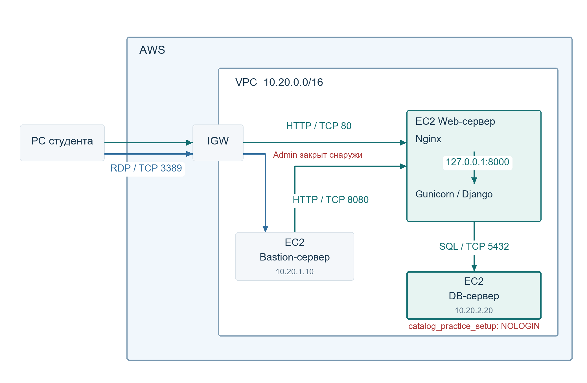

P5 Минимальные права и границы публикации
Практика P0–P5 · Задания M0–M5
Связанное задание: M5.
Что сделать в Practice5
Отключите вход роли настройки БД. Проверьте работу приложения с обычными правами и закрытие админки и настроек с публичного входа.
Схема задания

Пример решения (порядок действий)
P5.1 Посмотреть, что приложение может делать в БД
Среда выполнения:
SSM-терминал DB-сервера: ssm-user
Откройте psql в терминале DB. \du показывает атрибуты учебных ролей, \dp - права по таблицам.
Команды: нумерация внутри этого шага
# 1. В терминале DB открыть psql от postgres; следующие действия внутри psql.
sudo -u postgres psql -X -d jdu_catalog_practice
Далее вводить внутри psql
-- 2. В psql проверить атрибуты и права учебных ролей.
\du catalog_practice_*
-- 3. В psql прочитать права таблиц схемы public.
\dp public.*
-- 4. Выйти из psql в терминал ОС того же DB-сервера.
\q
Ожидаемый результат и его смысл:
У catalog_practice_app есть чтение, добавление и изменение оборудования. Удаление оборудования не разрешено.
P5.2 Запретить вход роли, созданной для настройки
Среда выполнения:
SSM-терминал DB-сервера: ssm-user
Если оставить вход для catalog_practice_setup, утечка его пароля даёт повышенные права. Просмотрите SQL, найдите NOLOGIN и примените его через psql.
Команды: нумерация внутри этого шага
# 1. Перейти в рабочий каталог /var/lib/jdu-web/lesson-resources-r1/app.
cd /var/lib/jdu-web/lesson-resources-r1/app
# 2. Показать SQL отключения входа setup без выполнения.
python3 -B profile_sql.py --profile practice 04_disable_setup.sql
# 3. Сформировать SQL отключения входа setup и применить через postgres к нужной БД.
python3 -B profile_sql.py --profile practice 04_disable_setup.sql | sudo -u postgres \
psql -X -v ON_ERROR_STOP=1 -d jdu_catalog_practice
Ожидаемый результат и его смысл:
Появляется ALTER ROLE. Вход catalog_practice_setup отключён, а приложение продолжает подключаться как catalog_practice_app.
P5.3 Убрать временные файлы настройки на Web
Среда выполнения:
SSM-терминал Web-сервера: ssm-user
Удалите два временных файла настройки. Остановите приложение, выберите профиль practice из P4 и запустите приложение. Проверьте, что пользователь ОС catalog не может записывать в каталог кода.
Команды: нумерация внутри этого шага
# 1. Прочитать владельца, группу, права и имя указанных файлов.
sudo stat -c '%U:%G %a %n' /etc/jdu-catalog/setup.env \
/etc/jdu-catalog/profiles/practice.setup.env
# 2. Удалить только два проверенных временных секретных файла setup.
sudo rm -- /etc/jdu-catalog/setup.env /etc/jdu-catalog/profiles/practice.setup.env
# 3. Прочитать владельца, группу, права и имя указанных файлов.
sudo stat -c '%U:%G %a %n' /etc/jdu-catalog/app.env \
/etc/jdu-catalog/profiles/practice.app.env /etc/jdu-web/db-practice.runtime.env
# 4. Остановить jdu-catalog перед выбором настроек.
sudo systemctl stop jdu-catalog
# 5. Выбрать сохранённый учебный профиль для следующего запуска приложения.
sudo python3 -B /opt/jdu-catalog/app/configuration.py activate --profile practice
# 6. Проверить runtime-конфигурацию без вывода секретов.
sudo python3 -B /opt/jdu-catalog/app/configuration.py check --phase runtime
# 7. Запустить jdu-catalog с выбранными настройками.
sudo systemctl start jdu-catalog
# 8. Прочитать текущее состояние jdu-catalog.
systemctl is-active jdu-catalog
# 9. Найти файлы и каталоги приложения, доступные на запись пользователю catalog.
sudo -u catalog find /opt/jdu-catalog/app -writable -print
Ожидаемый результат и его смысл:
Появляются CATALOG_PROFILE_ACTIVATED=practice и VALID, приложение переходит в active. У рабочих файлов указано root:root 600. Последняя команда find ничего не выводит.
Если не получилось:
Если активен другой профиль, остановитесь. Не повторяйте удаление отсутствующих файлов. При ошибке остановки, выбора профиля или проверки выясните причину до запуска приложения.
P5.4 Проверить, что видно через публичный порт 80
Среда выполнения:
SSM-терминал бастиона: ssm-user
Из терминала бастиона отправьте запросы на порт 80 Web. Проверьте доступ к списку и отсутствие публичного доступа к админке и внутренним настройкам. Админку откройте на бастионе через RDP в Firefox по http://admin.lab.test:8080/admin/.
Команды: нумерация внутри этого шага
# 1. Отправить HTTP к http://web.lab.test/; показать статус, заголовки и тело.
curl -i http://web.lab.test/
# 2. Отправить HTTP к http://web.lab.test/admin/; показать статус, заголовки и тело.
curl -i http://web.lab.test/admin/
# 3. Отправить HTTP к http://web.lab.test/app.env; показать статус, заголовки и тело.
curl -i http://web.lab.test/app.env
# 4. Отправить HTTP к http://web.lab.test/static/app.env; показать статус, заголовки и тело.
curl -i http://web.lab.test/static/app.env
Ожидаемый результат и его смысл:
Список возвращает HTTP 200, адреса /admin/ и файлов настроек - 403 или 404. На 8080 видна форма входа в админку.
Если не получилось:
Если виден текст env, не распространяйте его: сообщите преподавателю и исправьте публикацию.
P5.5 Проверить ограничения доступа на странице оценок
Среда выполнения:
Браузер на своём PC: Web Portal
Откройте P5 на странице оценок и выберите проверку функций и прав. Введите пароль practice_admin и запустите её. Проверка сравнит успешный вход и отказ добавить или изменить оборудование без входа.
Ожидаемый результат и его смысл:
Появляются результаты 16 критериев P5.